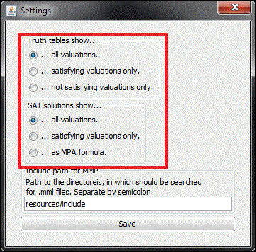
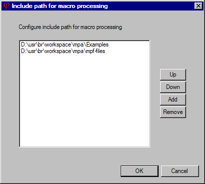

Options
MPA provides options through the toolbar and the menu "Options".
SAT solver
The SAT solver for checking satisfiability and validity of proposition is selected from
the option box in the toolbar.
- DefaultSAT4J. According to SAT4J
"this SAT solver is well suited for huge and difficult SAT benchmarks. It is basically the best
solver available in the library".
- LightSAT4J. According to SAT4J
"this SAT solver is useful for people using a SAT solver for hundreds or thousands small/easy
SAT problems within their application."
- NaiveDPLL. This SAT solver is a naive implementation of the Davis-Putnam-Logemann-Loveland
algorithm for solving the SAT problem for propositions in CNF. "NaiveDPLL" is part of the
implementation of MPA with the aim to demonstrate the idea of the algorithm, it is very, very slow
compared with the SAT4J solvers.
More options
- Select Font
- Selects the font in the editor and the output pane.
- Settings
- Some options to control the output of some tasks:

- Include Paths
- Include Paths for inclusion of m4 files and macro library files:
